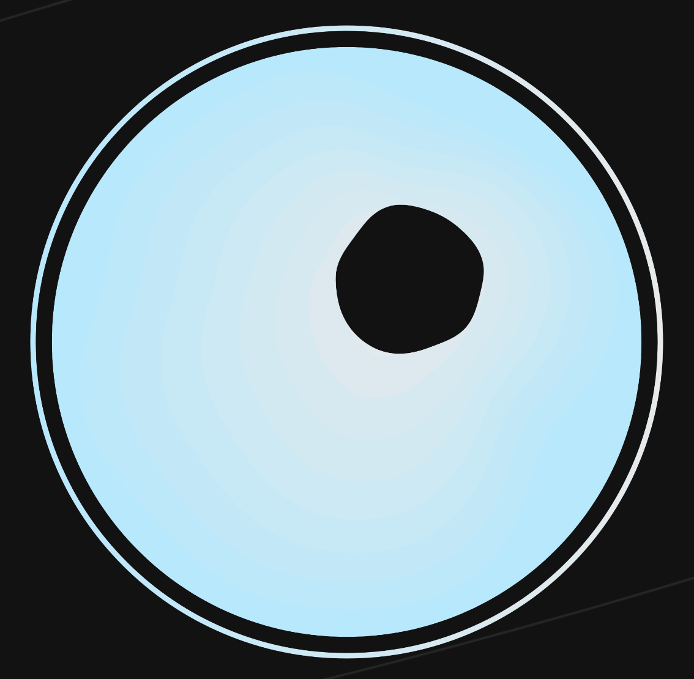
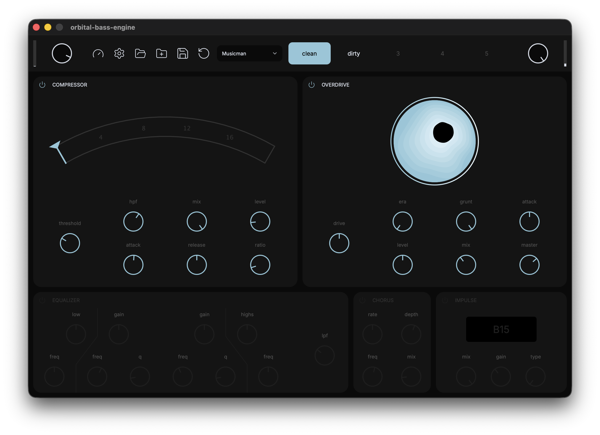

Orbital Bass Engine
Bass tone open-source optimization protocol: launch sequence initiated.
Download Source on GitHub
Install
Every build is on the latest release page: standalone app, VST3 and AU.
macOS
Install the standalone app into /Applications (on an Intel
Mac, replace macos with macos-intel):
curl -L "https://github.com/tywr/orbital-bass-engine/releases/latest/download/orbital-bass-engine-macos-standalone.zip" \
-o /tmp/orbital.zip \
&& ditto -xk /tmp/orbital.zip /Applications/ \
&& rm /tmp/orbital.zip
If Gatekeeper blocks it, right-click the app and choose
Open, or run
xattr -cr /Applications/orbital-bass-engine.app. Plugins go
in ~/Library/Audio/Plug-Ins/VST3 and
~/Library/Audio/Plug-Ins/Components (AU).
Windows
Download
the standalone zip, extract it and run orbital-bass-engine.exe. For the
plugin, extract
the VST3 zip
into C:\Program Files\Common Files\VST3.
Linux
Install the standalone app into ~/.local/bin:
mkdir -p ~/.local/bin \
&& curl -L "https://github.com/tywr/orbital-bass-engine/releases/latest/download/orbital-bass-engine-linux-standalone.tar.gz" \
| tar -xz -C ~/.local/bin
Then run orbital-bass-engine. For the plugin, extract
the VST3 archive
into ~/.vst3.
Signal chain
Every stage can be bypassed individually. Built with JUCE, available as a standalone app, VST3 and AU.
Modules
Tuner
Chromatic YIN pitch detection.
Compressor
Custom FET-style compression. Threshold, ratio, makeup and parallel mix.
Overdrive
Inspired by the Darkglass Vintage Microtubes, with circuit-modeled filters and a DAFx 2020 saturation curve.
EQ
Low shelf, two fully parametric mids and a high shelf, ±12 dB per band, plus low-pass.
Chorus
Multiband stereo chorus to allow clear bass without phase cancellation.
Cabinet IR
Built-in impulse responses from the Shift-Line pack: B15, SVT810, EBS410, XL410, PPC212, TC410.
Presets
Collections of 5 persistent preset slots stored as plain XML in a folder of your choice.